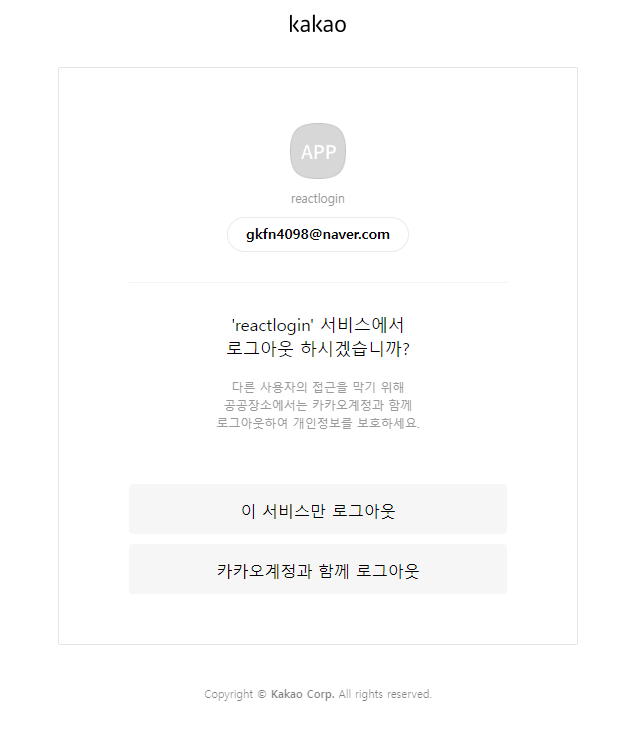
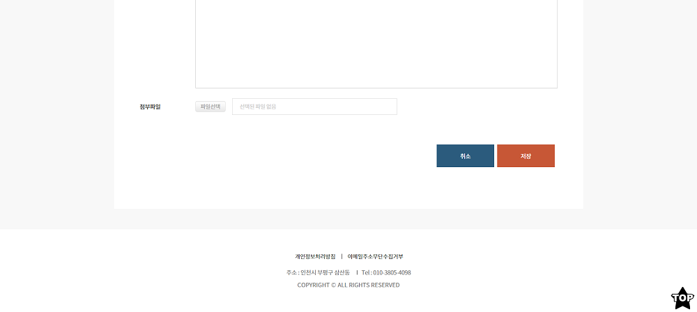
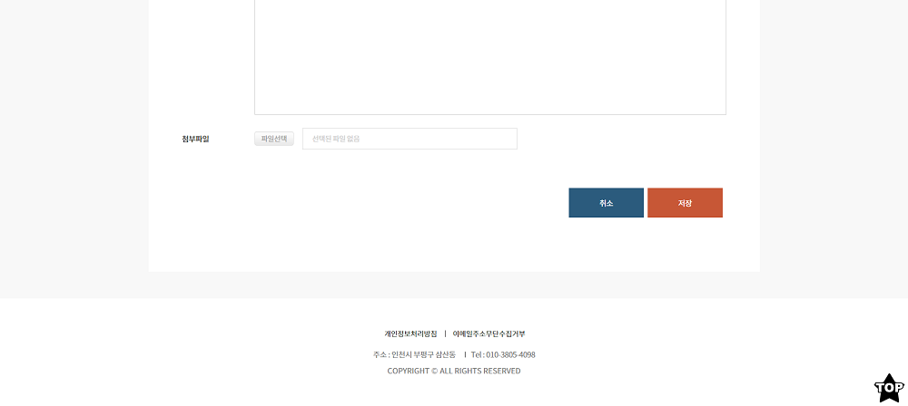
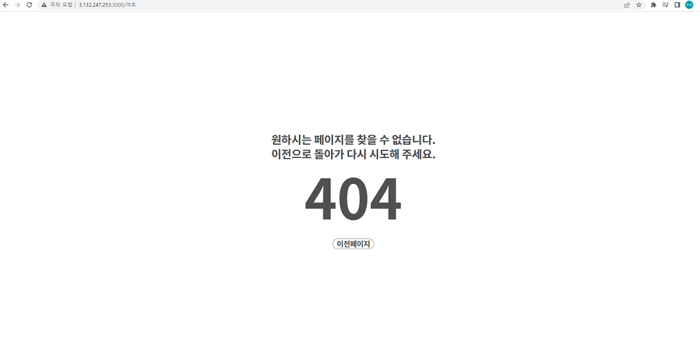
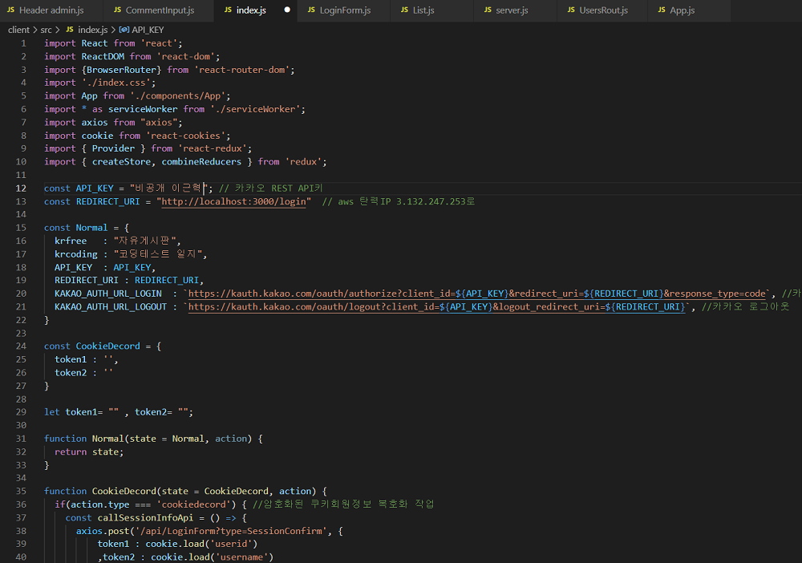

-
React를 이용한 게시판(CRUD)
ToyProject
-
기술 블로그
Tech Blog
-
연말정산 웹 솔루션
Company TeamProject
-
Iot를 이용한 RC카
University TeamProject
-
React를 이용한 게시판(CRUD)
#React.js#Redux#Node.js#Mysql#Aws(EC2,RDS)#Kakao Login API
AWS 무료 기간이 종료되어서 접속은 불가능합니다.
Front End : React / Javascript(ES6)
Back End : Node.js
Cloud : AWS(EC2,RDS)
DB : Mysql
API : Kakao Login API(REST KEY)
서버 접속툴: MobaXterm(SFTP,SSH)
개발 기간 : 3개월
기능 : 회원가입, 비밀번호 재설정, 일반 로그인, 카카오 로그인, 회원정보 수정, 페이징, 검색
에디터를 이용한 게시판 구현, 파일 다운로드, 파일 업로드 댓글과 대댓글 기능 구현
-프로젝트 후기-
토이프로젝트를 진행하면서 react와 node.js는 처음으로 다뤄보기 때문에
참고할 자료가 필요하여 책을 구매하여 공부하며 도움을 받고 시작했습니다. (본인 65%, 책 35%)
책에서는 클래스형 컴포넌트 사용법을 알려주었지만, 저는 함수형 컴포넌트인
hook 방식이 더 편리하다고 생각하여 인터넷 강의와 블로그를 참고하여 학습하였습니다.
개발을 진행하면서 state 관리가 불편하여 redux를 학습 후 적용을 해봤습니다.
부모와 자식 간의 prop 전달이 component가 많아지면 점점 복잡해지므로
redux와 같은 상태관리 도구들에 사용을 중요하게 생각하는 이유를 알게 됐습니다.
그리고 여러 가지 기능들과 component 들을 추가하면서 생기는 클라이언트와 서버 쪽에 이슈들을
해결해나가면서 많이 부족하지만, 저에게는 좋은 경험이 된 프로젝트였습니다.
전부는 아니지만 몇 가지 기능구현은 기술 블로그에 기록을 해놨습니다.
(일반 로그인)
로그인 화면에서 입력된 정보를 DB에 저장된 정보와 비교하여 로그인 처리
(DB에 암호화된 PW는 bcrypt를 사용하여 복호화 처리해서 비교)
서버에서 jwt를 사용하여 암호화된 ID, NAME과 기존에 암호화 시킨 PW를 쿠키에 저장
오류가 발생하지 않으면 다음 화면으로 이동

회원가입 시 PW는 bcrypt를 사용하여 해시 함수로 암호화하여 DB에 저장(해시는 암호화만 가능)

 메일 템플릿 파일을 불러오기 위해 node.js fs모듈과 메일 발송을 위해 nodemailer모듈 사용
메일 템플릿 파일을 불러오기 위해 node.js fs모듈과 메일 발송을 위해 nodemailer모듈 사용

(카카오 로그인)
REST API 키 사용
카카오 최초 연동시 카카오 고유IDNUM에 정보와 카카오 회원정보를 DB에 저장
/ 연동 후 로그인시 DB에 고유값과 비교하여 로그인처리

게시판
관리자/사용자 권한 부여 ex) 관리자는 모든 회원에 글과 댓글을 삭제 가능
페이징 기능은 react-paginate를 사용하여 구현
자유게시판

코딩테스트일지

게시판 검색

(일반 로그인시 내정보 옵션)
로그인된 정보는 암호화된 회원 쿠키정보를 복호화하여 가져와서 사용
로그인 타이머 / 시간연장 기능
페이지 새로고침시 시간과 로그인정보 쿠키 초기화
새로고침이 없는 페이지는 타이머 유지 0이되면 자동 로그아웃
정보수정 / 탈퇴 회원정보 확인 후 수정 및 탈퇴


(카카오 로그인시 내정보 옵션)
로그인된 정보는 DB에 저장된 카카오 로그인정보를 가져와서 사용
카카오 로그아웃시 이 서비스만 로그아웃,카카오계정과 함께 로그아웃 선택
카카오 연동해제(회원탈퇴)


글쓰기(에디터 이미지 업로드, 첨부파일 추가)
에디터 기능은 react-quill를 사용하여 구현
에디터 이미지 업로드 부분은 직접 함수를 만들어서 처리
업로드를 위해 node.js multer모듈 사용
 

내가 작성한 게시판 글
글수정,삭제 / 댓글,답글 보기 / 댓글 달기 / 답글 달기


댓글 수정

다른 사용자가 작성한 게시판 글(첨부파일 클릭시 파일 다운로드)
다운로드를 위해 node.js fs,path,mime 모듈 사용

404페이지

Redux 상태관리(코드 일부분) / API키는 보안상의 이유로 .env에서 관리

-
기술 블로그
#React.js#Gatsby.js#TypeScript#GraphQL#API
블로그 주소
https://lgh0801.github.io/
Front End : Gatsby(React,Node.js) / TypeScript
DB : GraphQL
API : IntersectionObserver
배포 : github
기능 : 카테고리 , 인피니티 스크롤 , 게시글 기능 구현
-프로젝트 후기-
개인 블로그를 만들 수 있는 Text 진행 강의가 있어서 공부하는 기회를 얻었습니다.
처음에는 Gatsby 프레임워크에 방식과 TypeScript 사용이
익숙하지 않았으나 직접 사용을 해보니 프레임워크와 react에서
TypeScript사용의 장점과 이유를 알게 되었습니다.
진행하면서 아무래도 Text 강의여서 어려움이 있었지만, 구글링과 디버깅으로 문제를 잡아갔습니다.
Gatsby 프레임워크에서 제공하는 다양한 라이브러리들에 편리함을 경험하고
저만의 개인 블로그를 운영할 수 있게 됐으며
정적 페이지를 구현할 수 있는 React 프레임워크인 Gatsby와 GraphQL를
이해할 수 있었으며 좋은 경험이 됐습니다.
끝으로 블로그에 추가하고 싶은 기능이 있으면 조금씩 개발해 나갈 예정입니다.
-
연말정산 웹 솔루션
#Vanilla JS#Asp#Mssql#API
Front End : Vanilla Javascript
Back End : Asp
DB : Mssql
API : SBgrid Api
프로젝트 기여도: 30%
참여인원 : 4명(개발자 3명, 퍼블리셔 1명)
개발 기간 : 6개월
-프로젝트 후기-
기존 ERP 프로그램을 연말 정산용 웹 솔루션으로 새롭게 만드는 작업이었습니다.
저의 역할은 설계된 부분에 화면과 기능을 개발하는 거였습니다.
이 프로젝트를 진행함으로써 Vanilla Javascript, MsSql, Asp를 사용하여 숙련도를 올리고
gridApi라는 그리드 전용 Api를 사용하여 저한테는 신선한 경험으로 다가왔습니다.
그리고 개인 또는 팀원과 협업하며 여러 이슈를 해결해나가면서
프로젝트를 완성해내어 평소에 중요하다고 생각하였던
협업의 중요성이 다시 한번 몸으로 와닿았던 경험이었습니다.


-
Iot를 이용한 RC카
#Arduino#RaspberryPi(SERVER)#Android#Bluetooth
사용기술 : Arduino / Raspberry Pi(mini computer) / Android
참여인원 : 4명(아두이노:2명 라즈베리파이:1명 안드로이드:1명)
개발 기간: 7개월
프로젝트 기여도: 35%
기능 : RC카-스마트폰 앱을 통한 원격 조종 기능 / 자동 주차(평행주차,후면주차)기능
주행 중 물체 감지시 자동정지 기능
각종 센서와 네트워크(BT/Wi-FI)를 이용 Rc카 제어
-프로젝트 후기-
보통 다른 팀들은 졸업작품으로 앱 개발, winform 기반, 게임개발을 주로 선택하였습니다.
저희는 특별한 경험을 하고 싶어서 IoT를 이용한 RC카를 졸업프로젝트를 진행하기로 했습니다.
저가 팀에서 맡은 역할은 아두이노 코딩 및 Rc카 하드웨어 보수였습니다.
이 졸업작품 프로젝트를 진행하면서 RC카가 소프트웨어적으로 오류가 발생도 하며
하드웨어적으로 문제(센서, 배터리)가 많이 발생했었습니다.
이런 문제들은 팀원과 서로 소통하고 협업을 통하여
이슈들을 해결해 프로젝트를 완성할 수 있었습니다.
저에게는 Iot를 접할 수가 있는 정말 특별하고 좋은 경험이었습니다.